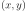
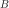
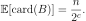

Algorithmes de streaming, BJKST¶
Les streams (flux) de données sont aujourd’hui présents dans de nombreux domaines (réseaux sociaux, e-commerce, logs de connexion Internet, etc.). L’analyse rapide et pertinente de ces flux est motivée par l’immensité des données qui ne peuvent souvent pas être stockés (du moins facilement) et dont le traitement serait trop lourd (penser au calcul de l’âge moyen des 1,86 milliards utilisateurs de Facebook pour s’en convaincre). Ce notebook s’intéresse particulièrement à l’algorithme BJKST.
[63]:
%matplotlib inline
Introduction¶
Plus formellement considérons un univers de taille  (un nombre très grand) qui ne peut être stocké en mémoire et une séquence d’éléments de . Un algorithme de streaming prend le stream
(un nombre très grand) qui ne peut être stocké en mémoire et une séquence d’éléments de . Un algorithme de streaming prend le stream  en entrée et renvoie une fonction (souvent à valeurs réelles).
en entrée et renvoie une fonction (souvent à valeurs réelles).
Notons que l’algorithme est souvent contraint d’accéder séquentiellement aux éléments de et / ou ne peut les parcourir qu’un nombre fini de fois.
Un bon algorithme de streaming doit satisfaire plusieurs contraintes:
Il doit être un bon estimateur de la vraie valeur que prendrait sur l’univers (plus de détails dans un instant)
Il doit pouvoir s’actualiser rapidement (en temps linéaire ou moins) à mesure que le flux
évolueIl doit être peu gourmand en mémoire
Etant donné une précision  et une tolérance , l’algorithme doît satisfaire:
et une tolérance , l’algorithme doît satisfaire:
Quelques exemples fréquents d’algorithmes de streaming:
Estimation de la valeur moyenne, de la médiane
Estimation du nombre d’éléments distincts
Estimation de la fréquences des élements
Estimation de la densité de probabilité
Estimer le nombre d’éléments distincts: l’algorithme BJKST¶
L’algorithme BJKST permet d’estimer le nombre d’éléments distincts d’un stream . Son fonctionnement est assez simple et repose sur la notion d’universal hashing que nous présentons ci-bas.
Universal hashing¶
L’idée derrière les fonctions de hachage est de faire correspondre des élements d’un ensemble dont la taille est variable (ou bien n’est pas connue) vers un ensemble de taille fixe. Le principe de l’universal hashing est de sélectionner aléatoirement une fonction  dans une famille de fonctions de hachage et de garantir un faible probabilité du nombre de collisions de hachage.
dans une famille de fonctions de hachage et de garantir un faible probabilité du nombre de collisions de hachage.
Formellement si l’on note l’ensemble , une famille de fonctions est dite universelle si toute fonction choisie uniformément dans la famille vérifie pour tout couple distincts.
Nous considérons ici la famille où ,  est un entier, , et un nombre premier . On peut sans trop de difficulté se convaincre que est uniformément distribué sur et que cette famille est universelle (voir Universal
hashing pour plus de détails).
est un entier, , et un nombre premier . On peut sans trop de difficulté se convaincre que est uniformément distribué sur et que cette famille est universelle (voir Universal
hashing pour plus de détails).
Collisions¶
Vérifions numériquement le nombre de collisions. Considérons un univers large prenons par exemple avec grand.
[64]:
n = 10**4
U = list(range(n))
Choisissons un nombre premier arbitrairement grand et une petite valeur de hashage.
[65]:
p = 4294967291
m = 10
Choisissons une fonction uniformément dans la famille
[66]:
import random
a = random.randint(1, p)
b = random.randint(0, p)
def h(x):
return ((a * x + b) % p) % m
Tirons des couples  distincts dans
[67]:
couples = set()
for i in range(500):
x, y = random.sample(U, 2)
couples.add((x, y))
print("Nombre de couples distincts = {}".format(len(couples)))
Nombre de couples distincts = 500
Pour chaque couple, calculons les valeurs de hashage et comptons le nombre de collisions.
[68]:
c = 0
for (
x,
y,
) in couples:
if h(x) == h(y):
c += 1
Le nombre de collisions rapporté au nombre de couples distincts nous donne une estimation de la probabilité de collision.
[69]:
p_collisions = c / len(couples)
print("Probabilité de collision = {:.2f}%".format(p_collisions * 100.0))
Probabilité de collision = 11.40%
Cette valeur est proche de la valeur théorique . Effectuons plusieurs tirages pour confirmer ce résultat.
[70]:
import numpy
collisions = []
# on reitere 100 fois
for _ in range(100):
a = random.randint(1, p)
b = random.randint(0, p)
def h(x):
return ((a * x + b) % p) % m
couples = set()
for i in range(500):
x, y = random.sample(U, 2)
couples.add((x, y))
c = 0
for (
x,
y,
) in couples:
if h(x) == h(y):
c += 1
collisions.append(c / len(couples))
p_collision = numpy.mean(collisions)
print("Probabilité de collision moyenne = {:.2f}%".format(p_collision * 100.0))
Probabilité de collision moyenne = 9.97%
Cette probabilité moyenne est proche de la valeur théorique. Réitérons pour d’autres valeurs  .
.
[71]:
sizes = [10, 25, 50, 100, 250, 500, 750, 1000]
p_collision = []
p = 4294967291
for m in sizes:
collisions = []
# on reitere 100 fois
for _ in range(100):
a = random.randint(1, p)
b = random.randint(0, p)
def h(x):
return ((a * x + b) % p) % m
couples = set()
for i in range(500):
x, y = random.sample(U, 2)
couples.add((x, y))
c = 0
for (
x,
y,
) in couples:
if h(x) == h(y):
c += 1
collisions.append(c / len(couples))
p_collision.append(numpy.mean(collisions))
[72]:
import matplotlib.pyplot as plt
fix, ax = plt.subplots()
plt.plot(sizes, p_collision)
plt.xlabel(r"$m$")
ax.set_title("Ratio des collisions en fonction de la taille de hash");
La probabilité de collision estimée est bien inversement proportionnelle à la valeur de hashage .
Algorithme BJKST¶
Nous considérons un univers de taille  et comportant élements distincts. Pour un stream de taille essayons d’estimer à l’aide de l’algorithme BJKST.
et comportant élements distincts. Pour un stream de taille essayons d’estimer à l’aide de l’algorithme BJKST.
[73]:
n = 10**3
N = 10**4
# nous tirons N entiers de 64bits (type i8) dont n sont distincts
universe = numpy.random.randint(0, n, N, dtype="i8")
s = 500
stream = universe[-s:]
L’idée derrière l’algorithme BJKST est de parcourir les élements du stream et de remplir un ensemble  par échantillonage. La probabilité d’échantillonage initiale est et lorsque devient trop grand (au delà d’un certain seuil ) on enlève des élements et on diminue la probabilité d’échantillonage. A la fin le nombre d’éléments dans et la probabilité d’échantillonage finale permettent d’estimer le nombre d’éléments distincts dans .
Pour nous prenons :
[74]:
# definissons un ensemble B
B = set()
epsilon = 0.1
B_max = 1 / epsilon**2
Choisissons un nombre premier arbitrairement grand:
[75]:
p = 4294967291
et tirons aléatoirement deux fonctions et distinctes:
[76]:
import random
# deux couples (a_1, b_1) (a_1, b_2) distincts
a1, a2 = random.sample(range(1, p), 2)
b1, b2 = random.sample(range(0, p), 2)
def h1(x):
return ((a1 * x + b1) % p) % s
def h2(x):
return ((a2 * x + b2) % p) % s
Initialisons un entier à zero. Pour chaque dans le stream nous calculons d’abord sa valeur de hachage :
[77]:
c = 0
# Prenons le premier élément du stream (à titre d'exemple)
x = stream[0]
y = h1(x)
print("x = {}, y = {}".format(x, y))
x = 464, y = 13
La probabilité d’échantillonage est basée sur le nombre de zéros à droite dans la décomposition binaire de . Pour calculer ce nombre diverses méthodes existent (voir Count the consecutive zero bits (trailing) on the right with modulus division and lookup pour plus de détails). Pour et la décomposition binaire comporte et zéros à droite respectivement:
[78]:
mod_37bit_position = (
32,
0,
1,
26,
2,
23,
27,
0,
3,
16,
24,
30,
28,
11,
0,
13,
4,
7,
17,
0,
25,
22,
31,
15,
29,
10,
12,
6,
0,
21,
14,
9,
5,
20,
8,
19,
18,
)
# Un seul zéro à droite
s = 2**1
zeros = mod_37bit_position[(-s & s) % 37]
print(
"Decomposition binaire de 2**1 = {}, nombre de zeros a droite = {}".format(
bin(s), zeros
)
)
# Dix zéros à droite
s = 2**10
zeros = mod_37bit_position[(-s & s) % 37]
print(
"Decomposition binaire de 2**10 = {}, nombre de zeros a droite = {}".format(
bin(s), zeros
)
)
Decomposition binaire de 2**1 = 0b10, nombre de zeros a droite = 1
Decomposition binaire de 2**10 = 0b10000000000, nombre de zeros a droite = 10
Notons  le nombre de zéros à droite dans la décomposition binaire de .
le nombre de zéros à droite dans la décomposition binaire de .
[79]:
k = mod_37bit_position[(-y & y) % 37]
print(
"Decomposition binaire de y = {}, nombre de zeros a droite = {}".format(bin(y), k)
)
Decomposition binaire de y = 0b1101, nombre de zeros a droite = 0
Puis nous comparons . Si c’est le cas nous calculons une nouvelle valeur de hashage de , et rajoutons le couple à l’ensemble .
[80]:
if k >= c:
z = h2(x)
B.add((z, k))
A l’initialisation la condition est toujours vérifiée (ce qui correspond à une probabilité d’échantillonage égale à ) :
[81]:
B
[81]:
{(539, 0)}
L’ensemble se remplit jusqu’à atteindre la taille . Lorsque cette taille est atteinte on incrémente et on enlève à tous les couples où .
[82]:
while len(B) >= B_max:
c += 1
# on prend ici une copie de B
for z, k in B.copy():
if k < c:
B.remove((z, k))
Parcourons le stream et regardons à quoi ressemble l’ensemble :
[83]:
for x in stream:
y = h1(x)
k = mod_37bit_position[(-y & y) % 37]
if k >= c:
z = h2(x)
B.add((z, k))
while len(B) >= B_max:
c += 1
for z, k in B.copy():
if k < c:
B.remove((z, k))
[84]:
print("Taille de B = {}, c = {}".format(len(B), c))
Taille de B = 96, c = 2
Une estimateur de la taille de l’univers est alors  :
:
[85]:
print("Estimation de la taille de U = {}".format(2**c * len(B)))
Estimation de la taille de U = 384
Pour s’en convaincre, remarquons qu’en moyenne le cardinal de est égal au nombre de pour lequel le nombre de zéros à droite dans la décomposition binaire est plus grand que . Ceci correspond au nombre de qui sont divisibles par :
C’est ici qu’intervient la notion de famille universelle car cette derniere égalité n’est valide que si le nombre de collision entre et est faible lors du hachage de par et . En effet, si le nombre de collisions était trop grand la taille de sous-estimerait le nombre d’éléments distincts.
La probabilité étant égale à si est distribué uniformément (l’écrire pour s’en convaincre) nous obtenons :

Résultats numériques¶
Regroupons le code dans une fonction
[86]:
def BJKST(stream, epsilon):
s = len(stream)
a1, a2 = random.sample(range(1, p), 2)
b1, b2 = random.sample(range(0, p), 2)
def h1(x):
return ((a1 * x + b1) % p) % s
def h2(x):
return ((a2 * x + b2) % p) % s
c = 0
B = set()
B_max = 1.0 / epsilon**2
for x in stream:
y = h1(x)
k = mod_37bit_position[(-y & y) % 37]
if k >= c:
z = h2(x)
B.add((z, k))
while len(B) >= B_max:
c += 1
for z, k in B.copy():
if k < c:
B.remove((z, k))
return 2**c * len(B)
En pratique une estimation fiable du nombre d’éléments distincts requiert de générer plusieurs calculs indépendants de l’algorithme et de prendre la médiane. Regardons comment la qualité de l’estimation évolue en fonction de la précision exigée et de la taille du stream.
[87]:
epsilons = [0.5, 0.2, 0.1]
sizes = [100, 250, 500, 1000, 2500, 5000]
estimates = {}
for eps in epsilons:
values = []
for s in sizes:
stream = universe[-s:]
values.append(numpy.median([BJKST(stream, eps) for _ in range(100)]))
estimates[eps] = values
[88]:
for eps in estimates:
plt.plot(sizes, estimates[eps], label="$\epsilon$ = {:.1f}".format(eps))
plt.axhline(y=n, color="r", linestyle="--", label="Vraie valeur de $n$")
plt.title("Estimation de $n$")
plt.xlabel("Taille du stream")
plt.legend()
[88]:
<matplotlib.legend.Legend at 0x7f1d715b2860>
[89]:
epsilon = 0.1
for i in range(len(sizes)):
print(
"Erreur relative = {0:.2f}%, s = {1}".format(
abs(estimates[epsilon][i] / n - 1.0) * 100.0, sizes[i]
)
)
Erreur relative = 91.80%, s = 100
Erreur relative = 79.20%, s = 250
Erreur relative = 61.20%, s = 500
Erreur relative = 35.20%, s = 1000
Erreur relative = 5.60%, s = 2500
Erreur relative = 0.80%, s = 5000
Nous observons que l’estimation converge vers la vraie valeur à mesure que la taille du stream augmente. Pour une précision et une taille de stream égale à l’erreur est de .
La fiabilité de l’estimation est décroissante avec le niveau de précision exigé, l’algorithme donne une bonne estimation de la vraie valeur (ligne horizontale rouge) pour .
Temps de calcul en fonction de la taille du stream¶
Regardons à présent comment le temps de calcul évolue en fonction de la taille du stream. Rappelons qu’un bon algorithme de streaming doit évoluer de manière au pire linéaire en fonction de la taille d’espace .
[90]:
import time
epsilon = 0.1
size_bound = 15
sizes = [100, 250, 500, 1000, 2500, 5000]
m = 100
times = []
for s in sizes:
start = time.time()
stream = universe[-s:]
BJKST(stream, epsilon)
times.append(time.time() - start)
times = numpy.array(times)
[91]:
fix, ax = plt.subplots()
plt.plot(sizes, times * 1000)
plt.title("Temps de calcul (en ms)")
plt.xlabel("Taille du stream")
[91]:
Text(0.5, 0, 'Taille du stream')
La complexité semble être linéaire ce qui est satisfaisant. Notons qu’aucun effort d’optimisation de performance (à part l’usage d’un set) n’a été fait à ce stade.
Un peu plus sur la précision de l’estimateur¶
Lorsque la précision est proche de l’estimation est moins bonne que pour une précision plus large. Pourquoi ?
[92]:
import random
import numpy
import matplotlib.pyplot as plt
%matplotlib inline
n = 1000
stream = numpy.arange(1000)
p = 4294967291
mod_37bit_position = (
32,
0,
1,
26,
2,
23,
27,
0,
3,
16,
24,
30,
28,
11,
0,
13,
4,
7,
17,
0,
25,
22,
31,
15,
29,
10,
12,
6,
0,
21,
14,
9,
5,
20,
8,
19,
18,
)
[93]:
def BJKST(stream, B_max, h1, h2):
c = 0
B = set()
R = []
removed = 0
for x in stream:
y = h1(x)
k = mod_37bit_position[(-y & y) % 37]
if k >= c:
z = h2(x)
B.add((z, k))
while len(B) >= B_max:
c += 1
for z, k in B.copy():
if k < c:
B.remove((z, k))
removed += 1
R.append([removed, len(B), c])
return numpy.array(R)
et égales à l’identité¶
Si nous prenons et égales à l’identité l’ensemble se remplit linéairement: pour on enlève tous les nombres avec (tous les nombres impairs donc la moitié) puis pour  on enlève tous les nombres où c’est à dire encore la moitié des nombres rajoutés et ainsi de suite..
on enlève tous les nombres où c’est à dire encore la moitié des nombres rajoutés et ainsi de suite..
A la fin l’estimation est parfaite (cf graphe en fonction de l’avancement dans le stream)
[94]:
B_max = 200
def h1(x):
return x
def h2(x):
return x
R = BJKST(stream, B_max, h1, h2)
estimate = 2 ** R[-1, 2] * R[-1, 1]
print("Estimated = {}, true = {}, c= {}".format(estimate, n, R[-1, 2]))
D = numpy.concatenate((numpy.array([1]), numpy.diff(R[:, 2])))
changes = stream[numpy.nonzero(D)]
fix, ax = plt.subplots()
ax.plot(stream, R[:, 0], color="red", label="total #removed")
ax.plot(stream, R[:, 1], color="blue", label="len B")
for c in changes:
ax.annotate(
"c = {}".format(R[c, 2]),
xy=(c, R[c, 1]),
xytext=(c + 65, R[c, 1] - 30),
arrowprops=dict(arrowstyle="->"),
)
ax.legend(loc=(1.1, 0.9))
plt.xlabel("$x$")
plt.ylabel("size")
Estimated = 1000, true = 1000, c= 3
[94]:
Text(0, 0.5, 'size')
cas où la taille du hash est petite¶
Si on prend un hash petit il faut regarder plus de nombres pour remplir et l’incrément de se fait « plus tard » dans le stream, d’où la mauvaise estimation.
[95]:
B_max = 200
s = B_max // 4
a1, a2 = random.sample(range(1, p), 2)
b1, b2 = random.sample(range(0, p), 2)
def h1(x):
return ((a1 * x + b1) % p) % n
def h2(x):
return ((a2 * x + b2) % p) % s
R = BJKST(stream, B_max, h1, h2)
estimate = 2 ** R[-1, 2] * R[-1, 1]
print("Estimated = {}, true = {}, c= {}".format(estimate, n, R[-1, 2]))
D = numpy.concatenate((numpy.array([1]), numpy.diff(R[:, 2])))
changes = stream[numpy.nonzero(D)]
fix, ax = plt.subplots()
ax.plot(stream, R[:, 0], color="red", label="total #removed")
ax.plot(stream, R[:, 1], color="blue", label="len B")
for c in changes:
ax.annotate(
"c = {}".format(R[c, 2]),
xy=(c, R[c, 1]),
xytext=(c + 65, R[c, 1] - 30),
arrowprops=dict(arrowstyle="->"),
)
ax.legend(loc=(1.1, 0.9))
plt.xlabel("$x$")
plt.ylabel("size");
Estimated = 616, true = 1000, c= 2
cas où la taille de hash est plus grande¶
Si on prend un une valeur de hash plus grande on se rapproche du cas et l’estimation est meilleure :
[96]:
B_max = 200
s = B_max
a1, a2 = random.sample(range(1, p), 2)
b1, b2 = random.sample(range(0, p), 2)
def h1(x):
return ((a1 * x + b1) % p) % n
def h2(x):
return ((a2 * x + b2) % p) % s
R = BJKST(stream, B_max, h1, h2)
estimate = 2 ** R[-1, 2] * R[-1, 1]
print("Estimated = {}, true = {}, c= {}".format(estimate, n, R[-1, 2]))
D = numpy.concatenate((numpy.array([1]), numpy.diff(R[:, 2])))
changes = stream[numpy.nonzero(D)]
fix, ax = plt.subplots()
ax.plot(stream, R[:, 0], color="red", label="total #removed")
ax.plot(stream, R[:, 1], color="blue", label="len B")
for c in changes:
ax.annotate(
"c = {}".format(R[c, 2]),
xy=(c, R[c, 1]),
xytext=(c + 65, R[c, 1] - 30),
arrowprops=dict(arrowstyle="->"),
)
ax.legend(loc=(1.1, 0.9))
plt.xlabel("$x$")
plt.ylabel("size");
Estimated = 984, true = 1000, c= 3
la taille de hash dépend de la précision ¶
A mon avis, il faut donc que la taille du hash pour dépende de la précision (dans Data Stream Algorithms ils préconisent une taille en ).
Si on prend cette taille pour on voit que l’estimation est meilleure pour une précision petite.
[97]:
def BJKST(stream, epsilon):
a1, a2 = random.sample(range(1, p), 2)
b1, b2 = random.sample(range(0, p), 2)
# taille de la valeur de hashage dépend de la precision
b = int(numpy.log(n) / epsilon**2)
def h1(x):
return ((a1 * x + b1) % p) % n
# on applique la taille b sur la seconde fonction de hash
def h2(x):
return ((a2 * x + b2) % p) % b
c = 0
B = set()
B_max = 1.0 / epsilon**2
for x in stream:
y = h1(x)
k = mod_37bit_position[(-y & y) % 37]
if k >= c:
z = h2(x)
B.add((z, k))
while len(B) >= B_max:
c += 1
for z, k in B.copy():
if k < c:
B.remove((z, k))
return 2**c * len(B)
[98]:
m = 100
epsilons = numpy.array([0.1, 0.09, 0.08, 0.07, 0.06, 0.05, 0.04, 0.03, 0.02, 0.01])
medians = numpy.array(
[numpy.median([BJKST(stream, eps) for _ in range(m)]) for eps in epsilons]
)
[99]:
import matplotlib.pyplot as plt
%matplotlib inline
# plt.plot(1.0 / epsilons, medians)
plt.plot(epsilons, medians)
plt.axhline(y=n, color="r", linestyle="--")
plt.title(r"Mediane en fonction de $1 / \epsilon$, m = {}".format(m))
plt.xlabel(r"$\epsilon$")
plt.ylabel("Mediane");
[ ]: